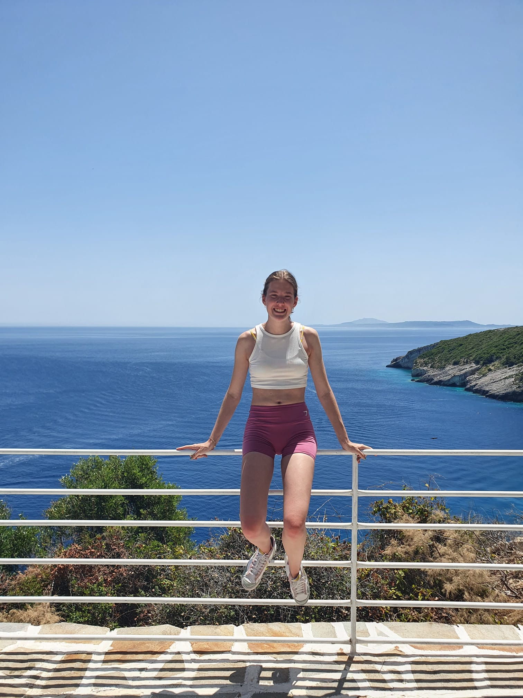
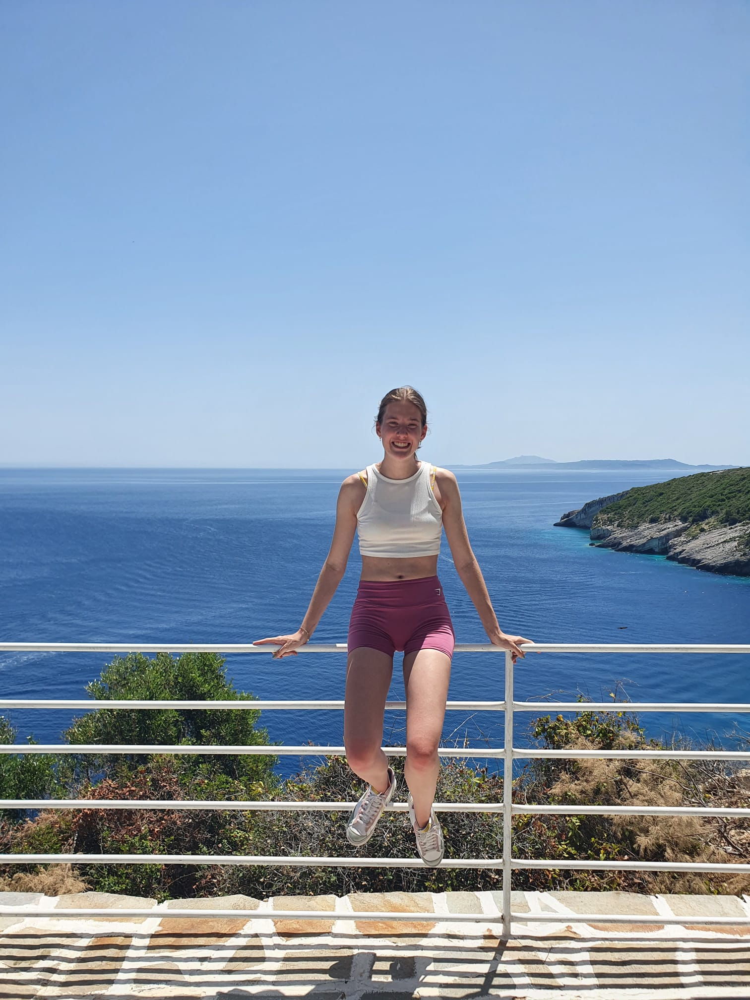

Skinari Cape, oftewel de noordkaap van Zakynthos is het meest noordelijkste puntje van het eiland.
dit is echt een super mooi plekje wat je ook zeker gezien moet hebben als je op vakantie naar Zakynthos gaat.
Als je komt aan rijden bij deze plek heb je eerst een heel lang pas waar allemaal bomen staan, dat is al echt een heel mooi gezicht, hier heb ik uiteraard ook fotos bij gemaakt.
Als je dan verder loopt kom je uiteindelijk bij de ingang van Skinari Cape. Het is een best wel toeristisch plekje waar ook veel tour bussen naartoe komen, daarom zou ik ook echt aanraden om dit in de ochtend te bezoeken, zo ben je nog een beetje de drukte voor.
Het eerste waar je tegen aan loopt is de witte windmolen met blauwe details, dit zag er gelijk al heel leuk uit. Je hebt hier ook een restaurantje waar je iets kan eten of drinken.
Als je hier naartoe gaat hou er dan wel rekening mee dat je best wat trappen op en af moet lopen, dus comfortable schoenen zijn handig. Het eerste wat je ziet als je over de reling kijkt is het azuurblauwe water.
Op de fotos ziet het er mooi uit, maar in het echt is het nog zoveel mooier.
Hoe meer stenen trappen je af loopt hoe mooier het uitzicht wordt.
Als je uiteindelijk bij het einde bent kom je bij een stukje waar je op ligbedje kan liggen, er is daar ook een stuk met een duikplank waar je kan gaan zwemmen.
Dit hebben wij helaas zelf niet gedaan, omdat wij daarna nog naar de blauwe grotten gingen, maar ik zou het zeker aanraden om daar even te liggen en te gaan zwemmen.
Het is ook zeker een mooie plek om te gaan snorkelen omdat het water zo helder is.
Dit vond ik zeker ook een van de mooiste plekken van de vakantie.


 
